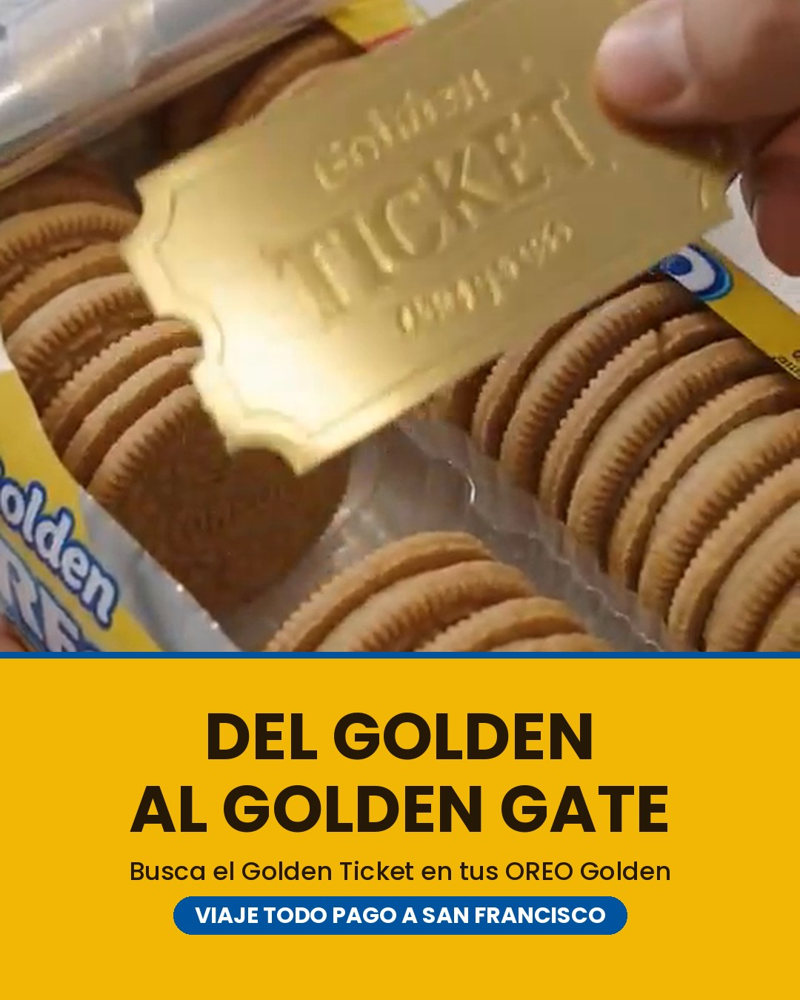
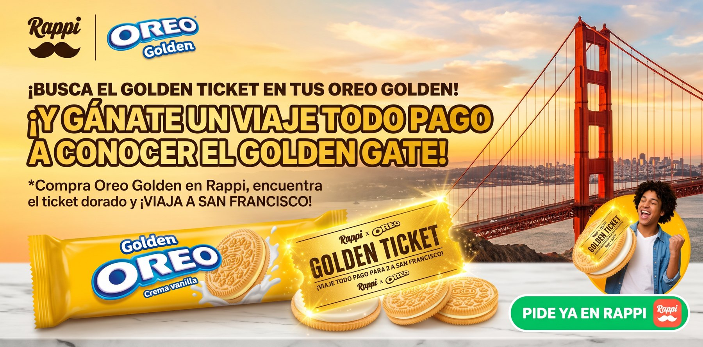
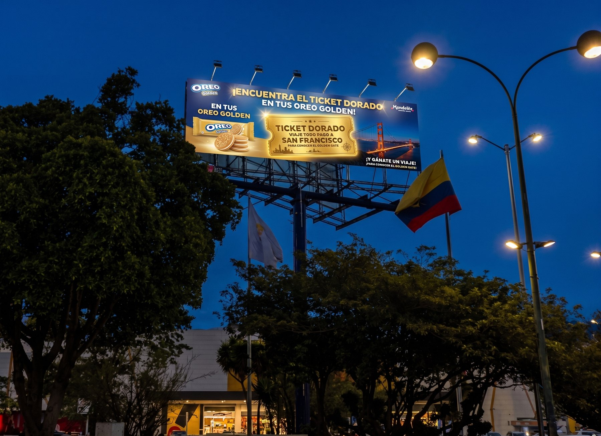

La misma actividad que les tocó a ustedes, resuelta de principio a fin: el brief presentado como se presenta un brief de verdad, y las cuatro piezas producidas.
Este es el ejemplo que se dio en clase para todo el salón, así que todo el mundo ya lo tiene. Si lo entregan, van a entregar exactamente lo mismo que los otros equipos. Está aquí para que vean el nivel de detalle que se espera y cómo se arma un brief, no para que lo copien.
Las casillas son el índice, no el trabajo. Cuando ustedes presenten, nadie va a leerles una tabla: se van a parar al frente y van a contar una historia que empieza en un problema y termina en cuatro piezas. Cada lámina de aquí abajo hace un trabajo y se para sola. Así se ve.
No es un problema de distribución. Está en la góndola, al lado de la clásica. Es que la mano nunca llega hasta allá.
Esta lámina existe para que en treinta segundos todo el mundo en la sala esté hablando del mismo problema. Si esto no queda claro, nada de lo que sigue importa.
Awareness: que la gente sepa que existe una OREO Golden. Hoy muchos ni siquiera la registran en el anaquel.
Trial: que la prueben una vez. Con una basta, porque el producto se defiende solo; el problema nunca fue el sabor.
Vale la pena decir también lo que dejamos por fuera: fidelizar, cambiarle la galleta de siempre a alguien, vender más OREO en general. Todas son metas válidas y en otro momento serían la campaña entera. Escoger dos y nombrar las que quedan para después es lo que hace que todo lo demás se pueda decidir rápido.
Compran snack por impulso, piden por domicilio y deciden en segundos frente a una góndola o una pantalla. Hasta ahí llega la demografía. Un target de verdad se ve así:
Esa frase no salió de una base de datos: salió de preguntarle a alguien. Por eso la actividad les pide veinte entrevistas. Una sola frase bien escogida vale más que tres párrafos de "jóvenes urbanos digitales".
Las primeras cinco describen; la sexta explica. Cuando encuentren la suya se va a notar sola, porque va a sonar distinta a las otras cinco y va a dar un poco de rabia. Esa es la señal de que ahí está la campaña.
Cuando por fin tienes ganas de algo dulce, ese no es el momento de experimentar. Probar un sabor nuevo es apostar el antojo, y por eso la mano va sola hacia la de siempre.
Un insight no es un dato ni una conclusión: es una verdad incómoda que la gente reconoce cuando la oye. Tienen una prueba de bolsillo para saber si ya llegaron: léanselo en voz alta a alguien. Si dice "sí, así soy", lo tienen. Si dice "claro, obvio", todavía es un dato, y casi siempre el insight está una pregunta más abajo del mismo dato.
Metemos un ticket dorado dentro de paquetes de OREO Golden.
Comprarla deja de ser "probar un sabor nuevo" y pasa a ser "participar por un viaje". El riesgo no desaparece: se convierte en la razón para comprar. El empaque se vuelve el medio y abrir el paquete se vuelve el contenido.
Noten que la idea es la respuesta directa al insight. Hay una prueba rápida que pueden hacerle a la suya: tapen el insight y vuelvan a leer la idea. Si sin él la idea queda coja, van muy bien, porque quiere decir que una nació de la otra.
Esta es la lámina que casi nadie incluye, y por eso es la que más los distingue. Si logran contar la suya en cinco pasos concretos, ya la tienen resuelta; y si algún paso todavía no sale, ese hueco es justo lo más interesante que van a resolver esta semana.
Un truco que sirve mucho: escríbanle a cada canal una frase que diga qué trabajo hace, distinto al de los demás. Los que ya tienen su frase quedan blindados para cuando les pregunten en la sustentación, y el que todavía no la tiene les está mostrando un trabajo que nadie está haciendo todavía. Cualquiera de las dos cosas les sirve.
Por qué en ese orden: la degustación no puede ir en semana 1, porque sería regalarle galletas a gente que no sabe que hay un premio adentro. Y el ganador no puede salir en semana 1 porque nadie habría comprado todavía. Cada semana existe porque la anterior la hizo posible, y esa dependencia es justo lo que convierte una lista de fechas en un cronograma. Un ejercicio corto: tomen sus semanas y traten de intercambiarlas. Si el plan se rompe, quedó bien armado.
Nadie arriesga un antojo, así que le pusimos un premio adentro al riesgo.
Intenten escribir la suya antes de presentar. Cuando quepa en una frase van a saber que adentro quedó una sola idea; y si todavía no cabe, esa misma frase les va a mostrar cuáles son las dos que están peleando, para que escojan con cuál se quedan. Sirve en los dos casos.
Una idea que solo funciona en un formato no es una campaña. Fíjense en que las cuatro dicen lo mismo y ninguna se ve igual: cada una está hecha para el sitio donde va a vivir.
El hallazgo, sin una sola palabra. Abre el paquete, aparece el ticket. Se entiende con el sonido apagado, que es como se ve la mayoría del scroll.

La versión quieta. La foto sostiene el hallazgo y la banda dorada dice el nombre y el premio, para quien la ve sin darle play.

Aquí la persona ya tiene hambre y la app abierta. Por eso este es el único formato donde el botón de comprar aparece de una: no hay que convencer, hay que no estorbar. Noten el co-branding, Rappi y OREO juntos, que es lo que hace creíble la promoción.

Se lee en tres segundos a sesenta kilómetros por hora: producto, ticket, premio. Nada más cabe. La valla no vende; hace que la promoción se sienta grande y de verdad, para que cuando aparezca en Rappi ya la conozcas.
Primero, el ticket dorado ya lo hizo alguien más hace sesenta años, en un libro que todo el mundo conoce. Funciona precisamente porque es familiar. Segundo, y más importante para su nota: este ejemplo se dio en clase para todos. Los otros equipos lo tienen igual que ustedes.
Lo que sí deberían llevarse de aquí:
La valla y el banner de Rappi son montajes hechos con inteligencia artificial para este ejercicio. No son piezas oficiales de la marca ni campañas reales. Lo decimos aquí por la misma razón por la que a ustedes se les pide etiquetar sus datos: si algo es una estimación o un montaje, se dice.
Vayan a hacer sus veinte entrevistas y encuentren su propia sexta W. La idea buena está ahí, en algo que alguien les va a decir sin darse cuenta de que se los dijo.